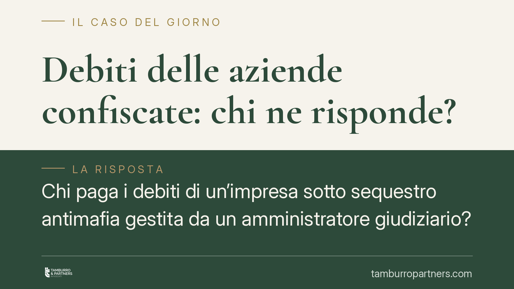

Debiti delle aziende confiscate: chi ne risponde?
Chi paga i debiti di un'impresa sotto sequestro antimafia gestita da un amministratore giudiziario? Il tema, al centro di un atteso intervento delle Sezioni Unite, riguarda fornitori, banche e professionisti che continuano a lavorare con aziende in amministrazione. La risposta non è automatica: dipende dalla veste in cui l'amministratore ha agito e dalle autorizzazioni del giudice delegato.

Il problema: una gestione a geometria variabile
Quando un'azienda viene sequestrata nell'ambito di un procedimento di prevenzione antimafia, la gestione passa a un amministratore giudiziario nominato dal tribunale. L'impresa, però, spesso continua a operare: acquista materie prime, paga stipendi, contrae finanziamenti. Da qui la domanda che interessa migliaia di operatori economici: chi risponde di quei debiti se l'azienda non li onora? Il patrimonio aziendale? L'amministratore in proprio? Lo Stato?
La questione è tutt'altro che teorica. Fornitori e istituti di credito valutano ogni giorno se e a quali condizioni continuare i rapporti con imprese sequestrate, proprio in base alla solidità del soggetto che garantisce il pagamento.
Avvertenza di metodo
Sul punto è attesa (o recentemente intervenuta) una pronuncia a Sezioni Unite. Prima di utilizzare in sede difensiva qualsiasi massima, è indispensabile verificarne gli estremi esatti — numero e data di deposito — nelle banche dati ufficiali. Le sintesi giornalistiche riportano talvolta principi di diritto in forma approssimata o anticipata rispetto al deposito delle motivazioni. In questo contributo esponiamo quindi il quadro normativo consolidato e la direzione interpretativa plausibile, senza attribuire a una decisione specifica un principio non ancora riscontrabile nel testo ufficiale.
Il quadro normativo
La disciplina di riferimento è il Codice antimafia (D.lgs. 159/2011), nella versione aggiornata dalla L. 161/2017. Senza pretesa di esaustività, tre disposizioni delimitano il perimetro della gestione:
- l'amministratore giudiziario esercita i poteri di gestione sotto la direzione del giudice delegato e deve attenersi alle autorizzazioni da questo rilasciate per gli atti che eccedono l'ordinaria amministrazione;
- per le aziende sequestrate la legge prevede un *programma di prosecuzione o ripresa dell'attività*, approvato dal giudice: è il documento che individua le operazioni consentite e il loro orizzonte economico;
- l'amministratore è tenuto a rendere conto della gestione, con rendiconti periodici sottoposti al controllo giudiziale.
> *La numerazione puntuale degli articoli (in particolare quelli sulla gestione delle aziende, sul programma di prosecuzione e sui rendiconti) va verificata nella versione vigente del Codice, stante le modifiche introdotte dalla L. 161/2017.*
Sul versante probatorio resta centrale l'art. 2697 c.c.: chi vuol far valere un diritto in giudizio deve provare i fatti che ne costituiscono il fondamento. Tradotto: il creditore che pretende il pagamento deve dimostrare a quale titolo il debito è sorto e chi ne sia il soggetto obbligato.
Perché lo Stato non è un garante automatico
L'idea che l'Erario risponda sempre dei debiti delle imprese sequestrate non ha appiglio normativo diretto. Le eventuali anticipazioni a carico dello Stato per sostenere la gestione non derivano da una generale responsabilità patrimoniale pubblica, ma da meccanismi specifici — da individuare caso per caso — collegati alle risorse destinate all'amministrazione dei beni (tra cui la disciplina del Fondo Unico Giustizia) e, soprattutto, subordinati all'autorizzazione del giudice. Senza quell'autorizzazione, l'aggancio alla finanza pubblica viene meno.
I due criteri di lettura
La direzione interpretativa più coerente con il sistema ruota attorno a due elementi, da accertare in concreto:
- La veste in cui ha agito l'amministratore. Se opera come organo della gestione aziendale, l'obbligazione tende a gravare sul patrimonio dell'impresa; se agisce al di fuori dei poteri conferiti, cambia il regime di responsabilità.
- L'esistenza e i limiti dell'autorizzazione giudiziale. Un atto autorizzato dal giudice delegato segue una sorte diversa rispetto a un atto compiuto senza copertura. Le anticipazioni erariali, in particolare, presuppongono un titolo autorizzativo.
Nessuno dei due criteri funziona in automatico: entrambi richiedono un accertamento documentale.
Implicazioni pratiche
Per fornitori, banche e professionisti, il messaggio è chiaro: la contrattazione con un'impresa sequestrata va gestita verificando *ex ante* chi si obbliga e con quali coperture. Confidare in una garanzia pubblica implicita è un rischio.
Per gli amministratori giudiziari, la tracciabilità delle autorizzazioni e l'aderenza al programma approvato dal giudice sono la prima linea di difesa contro contestazioni di responsabilità personale.
Cosa fare in concreto
- Verificate sempre il titolo dell'obbligazione: acquisite copia dell'atto autorizzativo del giudice delegato prima di concludere forniture o finanziamenti rilevanti.
- Conservate la documentazione che prova in quale veste ha agito l'amministratore e nell'ambito di quale operazione.
- Qualificate per iscritto nei contratti il soggetto obbligato e la copertura patrimoniale a garanzia del credito.
- Amministratori giudiziari: non eccedete i poteri conferiti e rendicontate con precisione ogni atto eccedente l'ordinaria amministrazione.
- Prima di agire in giudizio, verificate gli estremi esatti della pronuncia a Sezioni Unite e leggetene le motivazioni: l'onere della prova ex art. 2697 c.c. ricade su chi pretende il pagamento.
---
Contributo informativo a cura di Tamburro & Partners Avvocati. Non costituisce parere legale.
Ogni contratto ha il suo equilibrio.
Se vuoi una revisione delle clausole o una redazione su misura, scrivi allo studio. Ti rispondiamo entro un giorno lavorativo.